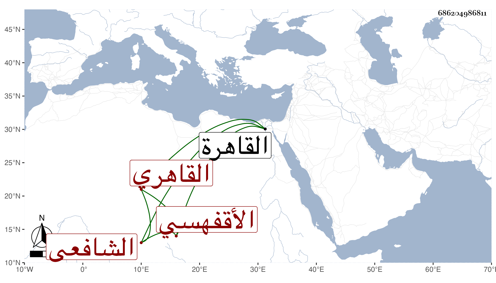

0902Sakhawi.DawLamic.ITO20230111-ara1.EIS1600.686204986811
Biography ID: 686204986811
110
محمد بن محمد الشمس الأقفهسي ثم القاهري الشافعي ويعرف بابن سارة . ولد سنة تسع وثمانمائة تقريبا ونشأ حريريا ثم حبب إليه العلم فتفقه بالشرف السبكي وكان أحد من قرأ في تقاسيمه في آخرين بل قرأ على البرماوي ألفيته في الأصول وأخذ عن البساطي يسيرا من الفنون ولازم القاياتي دهرا في الكشاف وجامع المختصرات والمغني والدارحديثي والعضد وشرح القطب والحاشية وغيرها حتى كان جل انتفاعه به وبواسطته تنزل في صوفية الأشرفية برسباي أول ما فتحت وكذا لازم شيخنا وغيره وتعاطى التوقيع بباب الحنفي يسيرا حين غيبة المحيوي الطوخي مع الونائي ولكنه لم يكن فيه بالماهر . ولا زال يدأب في العلوم مع وفور ذكائه إلى أن أشير إليه بالفضيلة التامة وحسن التصور وجودة البحث والإفحام للخصم والبراعة في المنطق والأصلين مع الديانة والأمانة والشهامة وكثرة التبسم بحيث يتوهم من لا يعرفه من ذلك شيئا وقد حج في سنة ثمان وأربعين صحبة الركب الرجبي وأقرأ هناك ، وممن أخذ عنه البرهان بن ظهيرة وابن عمه المحب بن أبي السعادات وآخرون وبلغني أن الشهاب الخواص أحد علماء القاهرة كان يقرأ عليه في الأصول إما في العضد وهو الظاهر أو في غيره وكان هو وابن حسان كفرسي رهان وتكلم مرة هو وأبو القسم النويري فرام البقاعي مزاحمتهما فأشار إليه ليسكت علما منهما به . وحصل له مرة مرض حاد بحيث خرج من بيته متجردا إلى الأشرفية . ومات في يوم الاثنين ثامن عشرى شوال سنة خمسين رحمه الله وإيانا .
